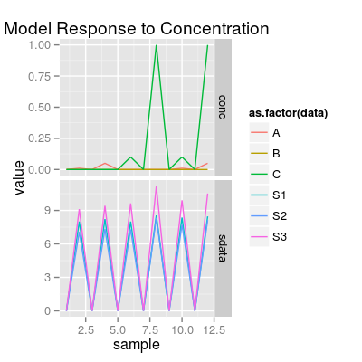
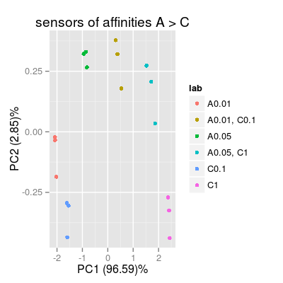
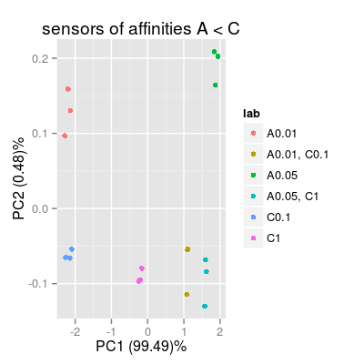
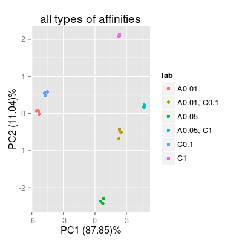

Demo SensorAffinity.
# define a representative set of gases A, C and AC # - appropriate to test sensor affinities across two species A and C set <- c("A 0.01", "A 0.05", "C 0.1", "C 1", "A 0.01, C 0.1", "A 0.05, C 1") # 0) check UNIMAN sensors and their sorption affinities data(UNIMANsorption) df <- as.data.frame(UNIMANsorption$qkc[, , "K"]) head(df)A B C 1 53.64473 46.02505 117.11543 2 62.88488 46.75066 146.01511 3 50.67575 44.31645 111.97059 4 80.66829 33.66036 65.54146 5 50.28884 42.04818 104.33481 6 90.60876 39.36334 126.07980df <- mutate(df, sensor = 1:nrow(df), sensor.group = ifelse(A > C, "More affinity to A", "More affinity to C")) p <- ggplot(df, aes(reorder(x = factor(sensor), A - C), y = A - C, fill = sensor.group)) + geom_bar(position = "identity") + coord_flip() + xlab("sensor") + ylab("Difference in K between A and C") pMapping a variable to y and also using stat="bin". With stat="bin", it will attempt to set the y value to the count of cases in each group. This can result in unexpected behavior and will not be allowed in a future version of ggplot2. If you want y to represent counts of cases, use stat="bin" and don't map a variable to y. If you want y to represent values in the data, use stat="identity". See ?geom_bar for examples. (Deprecated; last used in version 0.9.2)# in result: # - sensors with affinities A > C: 17, 13, 14, ... # - sensors with affinities C > A: 2, 1, 3, ... # 1) sensors with affinities A > C # - set drift noise level 'dsd' to zero, # in order to see more a class-relevant information, than drift sa1 <- SensorArray(num = c(13, 14, 17), dsd = 0) # look at the level of signal in reponse to pure analytes and to a mixture # - it is important, as # 1) PCA mostly captures a variation in the absolute level of signals # 2) accroding to the models for data geenration, mixture response is # a sum of responses to pure analytes (mixture is composed of), # thus, absolute values of signals matter. p0 <- plotSignal(sa1, set = set) p0
p1 <- plotPCA(sa1, set = rep(set, 3), air = FALSE, main = "sensors of affinities A > C") p1
# 2) sensors with affinities A < C sa2 <- SensorArray(num = 1:3, dsd = 0) p2 <- plotPCA(sa2, set = rep(set, 3), air = FALSE, main = "sensors of affinities A < C") p2
# 3) all available 17 types of sensors sa3 <- SensorArray(num = 1:17, dsd = 0) p3 <- plotPCA(sa3, set = rep(set, 3), air = FALSE, main = "all types of affinities") p3